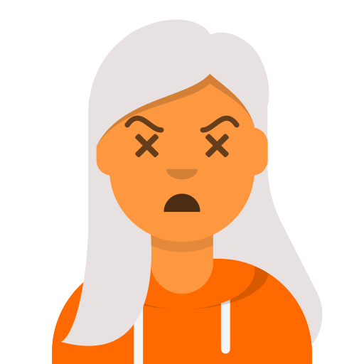

Valentina Ríos
- Fundadora de Parche Dev y desarrolladora web
- Aprendió a programar en un curso nocturno. Creó Parche Dev para que nadie tuviera que aprender solo.
- Sesiones:
- Bienvenida: por qué existe Parche Dev
- Panel: Mi primer empleo en tecnología (moderadora)